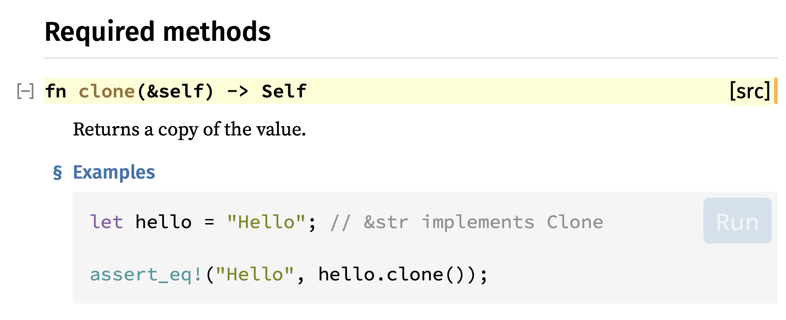

Copy, Clone
Có một số kiểu dữ liệu trong Rust rất đơn giản (simple types),
bao gồm integers, floats, booleans (true và false), và char.
Các simple types này nằm trên stack bởi vì complier biết chính xác size của nó.
Chúng được gọi là copy types. Bởi vì nó simple và nhỏ gọn nên dễ dàng để copy,
do đó compiler luôn copy nếu bạn bỏ nó vào function.
Làm sao để biết đọc một kiểu dữ liệu có được implement Copy hay không.
Bạn có thể xem trong Rust document. Ví dụ char:
https://doc.rust-lang.org/std/primitive.char.html
Nếu bạn thấy:
- Copy: có thể được copy nếu bạn bỏ nó vào function.
- Display: bạn có thể sử dụng
{}để print. - Debug: bạn có thể sử dụng
{:?}để print.
fn prints_number(number: i32) { println!("{}", number); } fn main() { let my_number = 8; prints_number(my_number); // Prints 8. prints_number gets a copy of my_number prints_number(my_number); // Prints 8 again. // No problem, because my_number is copy type! }
Do i32 được Copy nên chúng ta có thể sử dụng my_number nhiều lần mà không cần borrow & như struct.
Clone trait
Nếu bạn đọc document của String: https://doc.rust-lang.org/std/string/struct.String.html

String không được implement Copy, thay vào đó là Clone. Clone cũng giúp copy giá trị nhưng sẽ cần rất nhiều memory, và ta phải tự gọi method .clone() chứ Rust sẽ không tự Clone.
fn prints_country(country_name: String) { println!("{}", country_name); } fn main() { let country = String::from("Duyet"); prints_country(country); prints_country(country); // ⚠️ }
Sẽ báo lỗi, theo như compiler giải thích rằng country là String và không được implement Copy nên country bị move vào trong function. Do đó ta không thể sử dụng country được nữa.
error[E0382]: use of moved value: `country` --> src/main.rs:8:20 | 6 | let country = String::from("Duyet"); | ------- move occurs because `country` has type `String`, which does not implement the `Copy` trait 7 | prints_country(country); | ------- value moved here 8 | prints_country(country); // ⚠️ | ^^^^^^^ value used here after move For more information about this error, try `rustc --explain E0382`.
Có hai cách:
(1) Sử dụng .clone()
fn prints_country(country_name: String) { println!("{}", country_name); } fn main() { let country = String::from("Duyet"); prints_country(country.clone()); // <-- clone prints_country(country); }
String rất lớn, do đó .copy() sẽ tốn rất nhiều bộ nhớ. Sử dụng & để reference sẽ nhanh hơn, nếu có thể.
(2) Sử dụng & reference
fn prints_country(country_name: &String) { println!("{}", country_name); } fn main() { let country = String::from("Duyet"); prints_country(&country); prints_country(&country); }
Bonus: String và &str
Nếu bạn có một String và & reference, Rust sẽ convert nó thành &str khi bạn cần.
fn prints_country(country_name: &str) { println!("{}", country_name); } fn main() { let country = String::from("Duyet"); prints_country(&country); prints_country(&country); }
&str là một kiểu hơi phức tạp.
- Nó có thể vừa là String literals
let s = "I am &str";. Trường hợp nàyscó kiểu&'staticbởi vì nó được ghi trực tiếp vào binary. &strcũng có thể là borrowed củastrhoặcString.